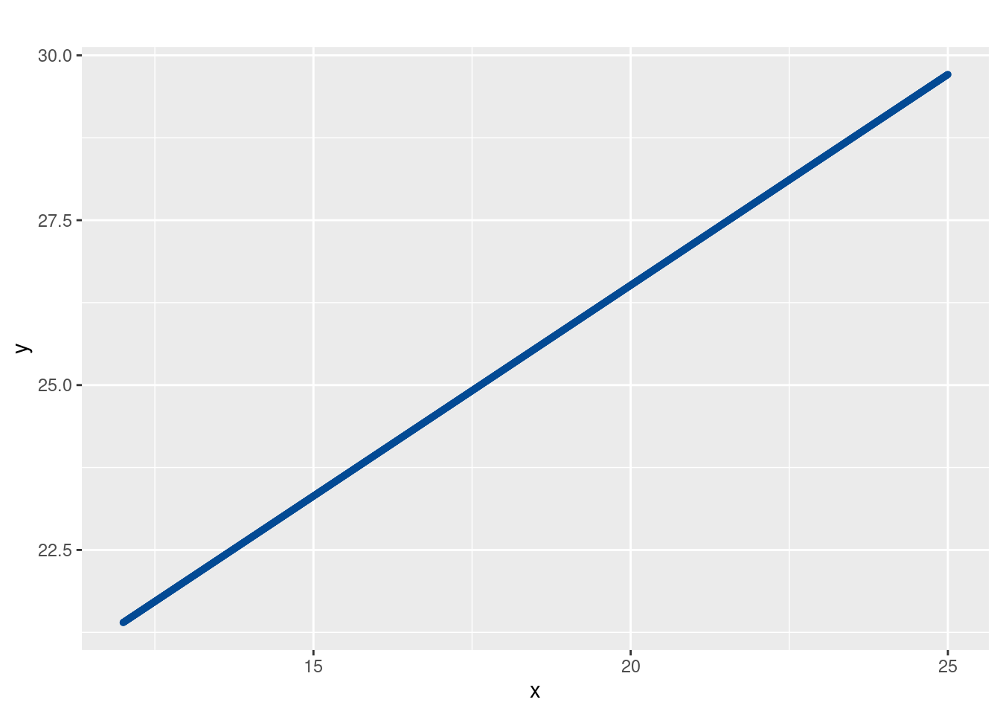
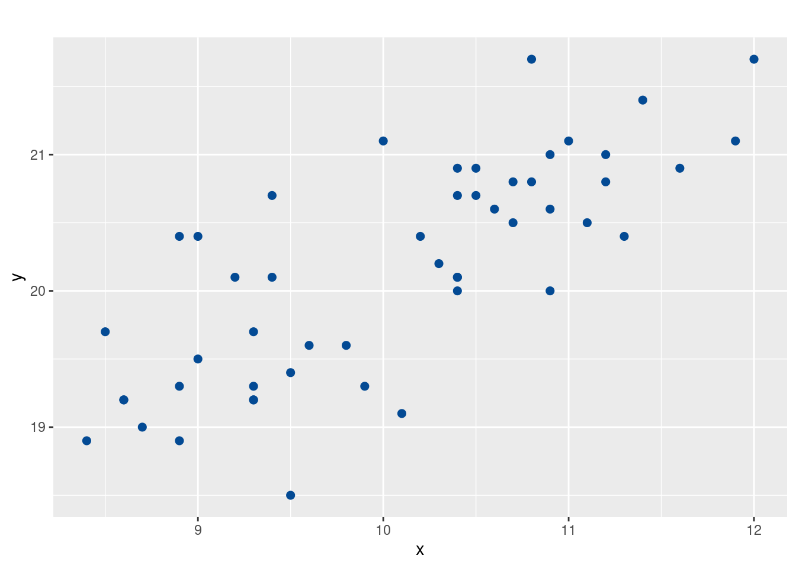
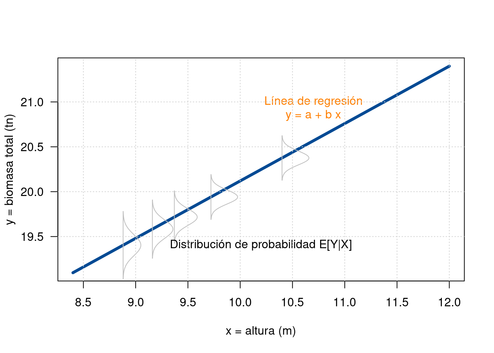
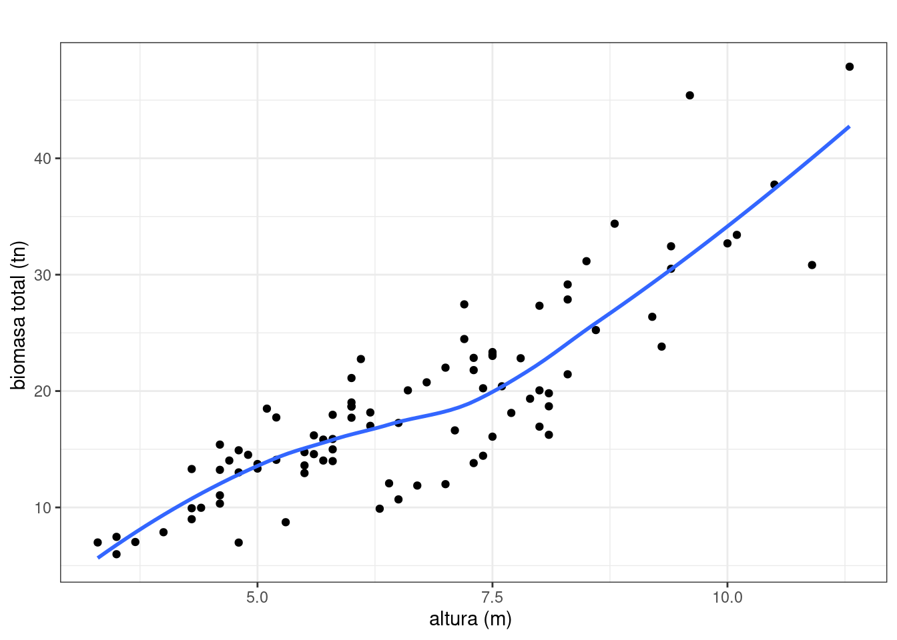

Una de las aplicaciones de más uso ciencia de datos es el modelo de regresión lineal. Esta técnica permite medir la relación que pueda existir entre una variable llamada variable respuesta y un conjunto de variables independientes.
Casos como la estimación :
El modelo se basa en una relación lineal entre las variables (linea recta)
\[Y= a + b X\] Donde :

Gráfico 1: Recta \(y = 13.7 + 0.64 x\)Cuando la relación no se ajusta de manera perfecta a una linea recta (\(\rho \neq 0\)), el problema se centra en la estimación de los coeficientes de la linea recta que mejor se ajuste a datos procedentes de una muestra de las variables \(X\) y \(Y\) en \(n\) parejas \((x,y)\)
Ejemplo
Supongamos la siguiente muestra de valores simulados de dos variables \(X\) y \(Y\)
| \(i\) | \(1\) | \(2\) | \(3\) | \(4\) | \(5\) | \(6\) | \(7\) | \(8\) | \(9\) | \(10\) | \(49\) | \(50\) | |
|---|---|---|---|---|---|---|---|---|---|---|---|---|---|
| \(x\) | 11.2, | 11.3, | 8.7, | 11.6, | 10.4, | 9.5, | 9.4, | 10.9, | 9.5, | 9.9, | \(\ldots\ldots\) | 11.0, | 10.5 |
| \(y\) | 20.8, | 20.4, | 19.0, | 20.9, | 20.0, | 19.4, | 20.1, | 20.0, | 18.5, | 19.3, | \(\ldots\ldots\) | 21.1, | 20.7 |
Lo que indicaría que la muestra está conformado por parejas : \((11.2, 20.8)\), \((11.3, 20.4)\) …, \((x_{i}, y_{i})\),… \((10.5, 20.7)\)

Figura 2 : Diagrama de puntos variables \(X\),\(Y\)El diagrama permite visualizar una tendencia de la relación no perfecta entre las dos variables. En este caso una fuerte correlación que garantice un buen nivel de relación entre las variables.
El objetivo de la modelación se centra en encontrar la ecuación de la recta que mejor se ajuste a los datos de la muestra, para ello al modelo matemático (\(Y= a + b X\)) se le agrega una variable aleatoria \(\varepsilon\) sobre la cual se hacen supuestos estadísticos y de esta manera se conforma el modelo estadístico :
\[Y= \beta_{0} + \beta_{1} X + \varepsilon\]
Donde:
Ejemplo
Se tienen datos de un proceso de generación de papel apartir de madera y se desea establecer la relación entre la biomasa de un arbol (\(Y\), en toneladas) y la altura del arbol (\(X\), en metros). Veamos una gráfica de dispersión de los datos:
La gráfica indica una clara relación lineal positiva entre las dos variables, lo cual indica que a mayor altura del árbol, mayor será la masa de biomasa contenida en el árbol. El modelo que se pueda originar de estos datos puede servir para estimar la biomasa dependiendo le la altura del árbol, sin necesidad de derrobarlo y ralizar la medición en efectos destructivos.
Un primer significado puede ser verla a partir de la distribución conjunta de las variables \({X}\) e \({Y}\), a partir de la definición la distribución condicional de \({Y\vert X}\), esto es \({f(Y\vert X)}\), y determinar \({E(Y\vert X)}\). En este caso la regresión pretende ajustar la curva correspondiente a \({E(Y\vert X)}\).

Gráfico 2: Línea de regresión lineal simple ajustada a \({E(Y\vert X)}\)
Un segundo significado consiste en que dado un conjunto de pares de datos \({(X,Y)}\), puede asumirse una forma funcional para la curva de regresión y tratar de ajustarla minimizando el error de ajuste.

Gráfico 3 : Linea de ajuste minimizando el errorEn la construcción de un modelo de regresión lineal se deben tener en cuenta los siguientes supuestos:
S1 : La variable respuesta \({Y}\) es una variable aleatoria cuyos valores se observan mediante la selección de los valores de la variable predictora \({X}\) en un intervalo de interés.
S2 : Por lo anterior, la variable predictora \({X}\) no es considerada como variable aletatoria, sino como un conjunto de valores fijos que representan los puntos de observación, que se seleccionan con anticipación y se miden sin error.
Sin embargo, si esto último no se cumple, el método de estimación de mínimos cuadrados ordinarios (MCO) para los parámetros del modelo de regresión puede seguir siendo válidos, si los errores en los valores de la variable predictora son pequeños en comparación con los errores aleatorios del modelo \({\varepsilon_i}\).
S3 : Los datos observados \({(x_i,y_i),\ i=1,\ldots,n}\), constituyen una muestra representativa de un medio acerca del cual se desea generalizar. Si no es así, no es apropiado realizar inferencias en un rango de los datos por fuera del considerado.
S4 : El modelo de regresión es lineal en los parámetros. Es decir, ningún parámetro de la regresión aparece como el exponente o es dividido o multiplicado por otro parámetro, o cualquier otra función.
Sin embargo, la línea de ajuste puede tener una curvatura (no ser lineal en \({X}\) y/o en \({Y}\)), caso en el cual mediante una transformación conveniente de las variables (\({X}\) y/o \({Y}\)), es posible aplicar las técnicas de regresión lineal sobre estas nuevas variables.
S5 : Si la ecuación de regresión seleccionada es correcta, cualquier variabilidad en la variable respuesta que no puede ser explicada exactamente por dicha ecuación, es debida a un error aleatorio.
S6 : Los valores observados de la variable respuesta no se encuentran estadísticamente correlacionados. Se supone que cada valor observado de \({Y}\) está constituído por un valor real y una componente aleatoria.
S7 : El modelo de regresión con una muestra de \({n}\) pares de datos \({(X_i, Y_i)}\) es:
\[ Y_i = Y\vert X_i = E\left[Y \vert X_i\right] + \varepsilon_i \hspace{.8cm} i=1,2,\ldots,n \]
con \[ E\left[Y \vert X_i\right] = \beta_0 + \beta_1 X_i \]
S8 : Los errores aleatorios \(\large \varepsilon_{i}\sim N(0,\sigma^{2}), \hspace{0.8cm} i=1,2,\ldots,n\).
S9 : Los errores aleatorios \(\large \varepsilon_i\) son estadísticamente independientes.
Por tanto:
\[ COV(\varepsilon_{i},\varepsilon_{j})=0, \forall_{i\neq j}, \hspace{.8cm} COV(Y_{i},Y_{j})=0, \forall_{i\neq j}. \]
S10 : La varianza de los errores aleatorios es \({\sigma^{2}, \forall_{i=1,2,\ldots,n}}\) (supuesto de varianza constante pero desconocida).
Dado que los valores \({X_i}\) de la variable predictora no son considerados aleatorios y que los errores son independientes, la varianza de los \({Y_i}\) también es \({\sigma^{2}, \forall i}\) y por tanto este parámetro es independiente del punto de observación (es decir, del valor de \({X}\)).
Pero en el caso que este último supuesto no pueda aplicarse, entonces el método de regresión empleado será el de mínimos cuadrados ponderados.
En resumen, para el caso del modelo de regresión lineal simple, los supuestos se pueden expresar como:
\[ \varepsilon_i\overset{\text{iid}}{\sim} N(0,\sigma^2), \hspace{.8cm}i=1,2,\ldots,n \]
donde, \(iid\) es la abreviación de independiente e idénticamente distribuido.
Estos supuestos tienen como consecuencia directa en la respuesta que:
\[ Y\vert X_i\overset{\text{ind}}{\sim} N(\beta_0 + \beta_1 X_i,\sigma^2) \]
donde, \(ind\) es la abreviación de independiente distribuido.